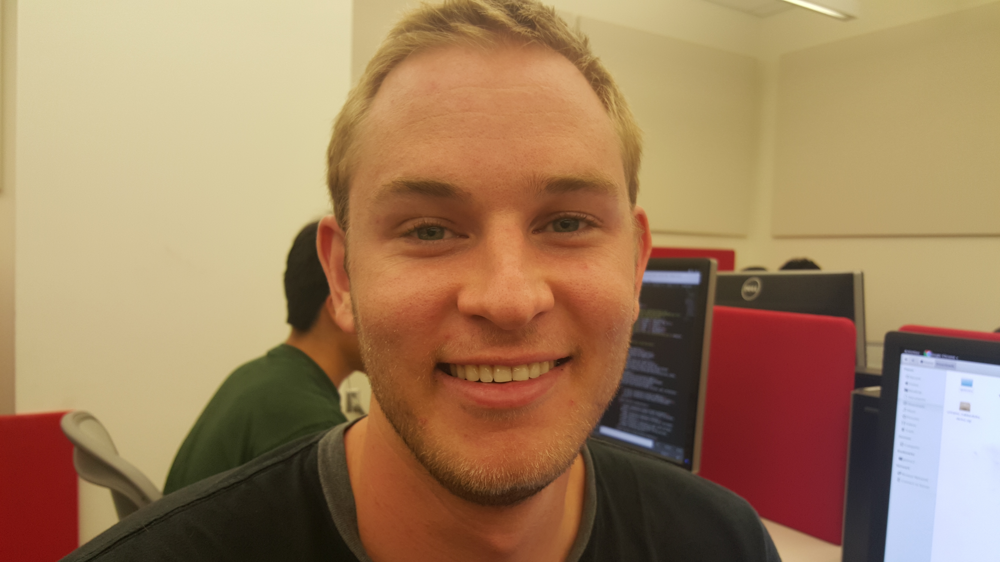
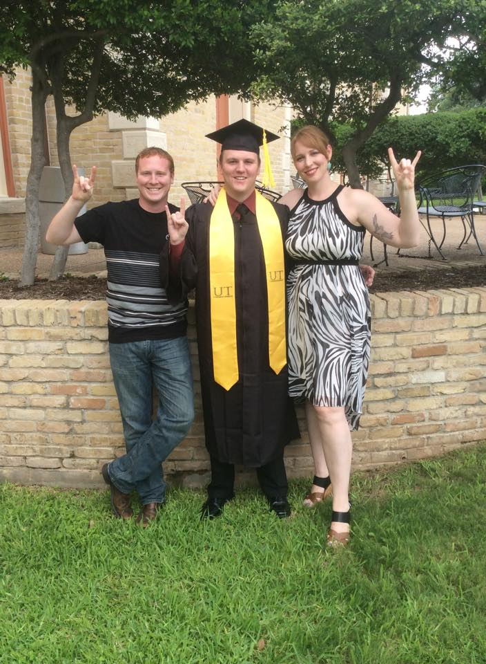

About the Team

Statistics:
Total Commits: 86
Total Tests: 12
Total Issues: 32
Links:
Apiary API
Github Issue Tracker
Github Repo
Github Wiki
Data Sources:
We used the following APIs and wrote these scripts that got data from the APIs and created JSON objects with the information we wanted from them.
-

Daniel Coonan
Commits: 6
Tests: 0
Issues: 2
Major Responsibilities: Frontend - About -

Brian Chenault
Commits: 7
Tests: 12
Issues: 2
Major Responsibilities: Models, Technical Report, Unit Tests -

Lawrence Ying
Commits: 10
Tests: 0
Issues: 4
Major Responsibilities: Frontend - Splash, Tables -

Chuchu Ma
Commits: 26
Tests: 0
Issues: 20
Major Responsibilities: API Documentation, Technical Report, Data Scraping -

Andreas Sudihardjo
Commits: 12
Tests: 0
Issues: 6
Major Responsibilities: Frontend - Content of Pages